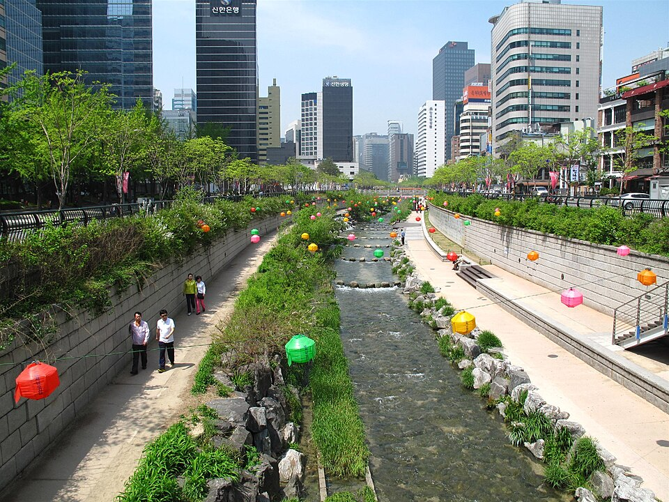
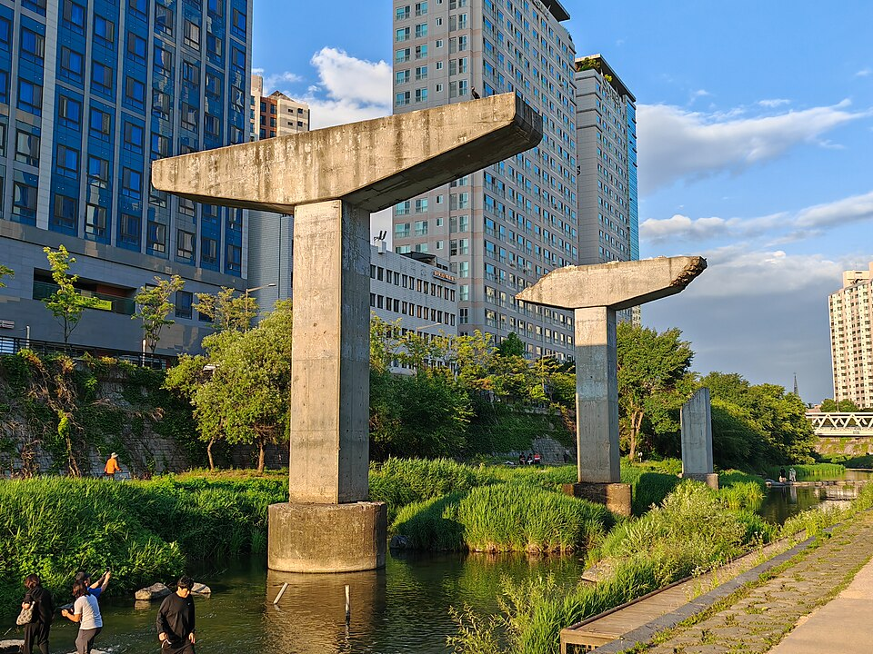

This page is under development :) Please do not share without permission
CASE STUDY
COOKSVILLE STATION
MISSISSAUGA, ON
How can we build complete, family-friendly communities while managing flood risk?
COOKSVILLE STATION
Animation Frame 1: 3D rendering of Cooksville Station in Mississauga, Ontario.
Description: The Cooksville neighbourhood in Mississauga is a future transit hub where the existing GO rail network will converge with the new Hazel McCallion light rail transit (LRT) and Dundas bus rapid transit (BRT) lines, making it a focal point for growth.
Animation Frame 2:
Description: Adding density around transit stations requires planning for different kinds of households. But the housing and amenities around station areas are often aimed solely at individuals or couples.
Animation Frame 3: 3D rendering of School of Cities' proposed scenario for development surrounding Cooksville Station.
Description: Cities are also facing greater risks from a changing climate, with flooding the most frequent and costly impact across the country.
Densification near transit means managing the growing risk of flooding while creating communities for everyone. Our Cooksville case explores strategies for more inclusive densification while designing around urban floods.
This is one of five case studies produced by the School of Cities to identify different kinds of transit-oriented development across Canada and to explore the opportunities and trade-offs involved in creating thriving communities near transit. In each case, we examine current patterns of growth and project what that community might look like in 20-30 years if development continues in this way (the “current trajectory”). We then present an alternative, “optimized” scenario that imagines policy and design changes that could address common challenges. All station area renderings are conceptual and should not be interpreted as specific guidance for individual properties. Renderings were created by the Infrastructure Institute in 2025 and may not reflect more recent proposals.
Neighbourhood overview
The Cooksville neighbourhood in Mississauga is a future transit hub where the existing GO rail network will converge with the new Hazel McCallion light rail transit (LRT) and Dundas Bus Rapid Transit (BRT) lines, making it a focal point for growth.
The Cooksville station area also sits within the Cooksville Creek watershed, which is at risk of flooding in the event of significant storms. The City of Mississauga has undertaken significant stormwater management work in the area, including creating an upstream water storage pond, but high levels of development make this area – like many urban areas on floodplains – vulnerable to inundation. [1]
With nearly 20,000 residents, the station area is dense, vibrant and diverse. Nearly 73% are visible minorities. A gateway for immigrants, two-thirds of Cooksville’s residents are foreign-born, and one in five is a recent arrival.
Cooksville, though with a median age of 54, hosts a diversity of households. This includes families, alongside a growing number of seniors, of whom many live alone. Many people – especially renters – live in high-rise apartments along the major corridors of Hurontario and Dundas Streets, but there are also established, lower-density neighbourhoods further from the station. Household incomes average about $92,000 per year, far below the city average.
Seeing Cooksville as a high-potential node for growth, the City has set an ambitious future density target of 300 people and jobs per hectare for the station area.
Yet planning for inclusive growth here will require prioritizing the needs of current and future residents, particularly families. Many elements of successful complete communities are present, mainly centred on the “Four Corners” of Hurontario and Dundas -- schools, health care, and retail – but access to child care is limited, and the area has a critical gap in community centres.
There is also little existing green space. With few formal civic amenities, residents rely on commercial plazas and small parks for daily needs. And like many suburban areas, the neighbourhood itself is built for the car: wide arterials and fragmented sidewalks make walking and cycling a challenge. Another challenge comes from the site itself. Cooksville has a number of buildings sitting on the Cooksville Creek floodplain, and the area has been deemed a flood risk.
Creating a vibrant community here will require creative approaches to managing risk while increasing access to critical amenities.
Cooksville’s current trajectory
A recent surge in investment and proposed development in the area as the Hazel McCallion line nears completion suggests developer confidence in Cooksville’s potential. [2] Dozens of high-rise projects are in the pipeline, set to transform surface parking lots and aging retail plazas into mixed-use towers.
If growth continues this way, it will be concentrated on a handful of underused commercial and industrial lots. The default is towers on podiums – a built form tried and tested for effectively increasing density.
Currently proposed or under construction development 800m from Cooksville station.Infrastructure Institute (2025).
New towers are clustered on lots in a fragmented pattern, with density in the form of height to offset costly flood mitigation measures in basements and ground floors.
But this does not necessarily create a livable neighbourhood, and without early investment in civic infrastructure, Cooksville risks becoming just a collection of towers: dense but socially thin.
Crucial infrastructure is not keeping pace. The Cooksville Community Hub, co-located with the Thomas L. Kennedy Secondary School, is planned but needs funding. Other cultural amenities are largely non-existent.
Rendering of the planned Cooksville Community Hub, illustrating a vibrant community space.City of Mississauga, pg. 44.
Local parks are small and discontinuous, and few institutional sites exist to anchor future population growth.
Building a more complete community here requires more intentional planning – for families, and for floods. Here’s how it could be done.
Optimized scenario: Building for families, building for all
New mid- and high-rise construction is often oriented toward individuals or couples without children, even though families have always lived in these kinds of spaces. [3] Improving the number and kind of family-oriented units, with targeted community improvements, can increase density around transit and benefit all residents.
RECOMMENDATION 1:
Provide more 2- and 3- bedroom units
The best way to include families in growth is to give them the space they need. Cramped spaces and an insufficient number of bedrooms are the most common issues cited by both children and adults in high-rise dwellings. [4] Units with two or more bedrooms allow more flexible space for families and multi-generational households. [5]
In Mississauga, two-thirds of households are families, but most proposed new buildings allocate 70% of units as studios or 1-bedrooms.
The current market shows an appetite for more bedrooms: demand for 1-bedrooms is low, with supply outpacing demand. Meanwhile, even in the current slow condo market, many larger units are selling above asking price, with 2.5 times the sales volume. [6]
Our research has shown that this is also a more efficient way to build because kitchens and bathrooms are shared by more people. This allows for a reduction in extreme height. Towers can be shorter, and more mid-rise buildings can be introduced to create active, human-scaled street fronts.
Mississauga has already taken steps to incentivize this kind of unit mix by eliminating municipal development charges for units with 3 or more bedrooms in purpose-built rental apartments. [7] This incentive could be expanded by similarly eliminating these charges at the regional level, or for all new buildings. Other countries, such as Ireland, go further and prescribe a mix of apartment sizes and bedroom numbers before new developments are approved. [8]
RECOMMENDATION 2:
Adopt Canadian and global good practices at the site level
In addition to the number of bedrooms, spaces within units must be flexible. Some cities, including Toronto in its Growing Up guidelines for vertical communities, suggest having a recommended play space of 2 by 3 metres within units. Guidelines such as these make planning for larger households more concrete.
Safety and connection are also essential, with many studies citing windows and balconies as areas that can often be improved with required safety mechanisms to make units more family friendly. [9] Within buildings, ensuring that there are shared spaces, courtyards with play areas, and facilities that children can access – including elevator buttons at child level – encourages connection and independence.
Easy interaction with the street can mitigate a lack of private outdoor space, making density more appealing. Many families have expressed a preference for “ground-oriented housing,” which is housing with direct access to a street or public space that doesn’t pass through a shared corridor or elevator, and which is often found with missing middle-type housing. [10]
In their design guidelines, cities can also ensure buildings are surrounded and green spaces with places to play (not solely planted gardens or inaccessible hardscape) away from busy roads. [11]
Playground and green space designed for safe, accessible playPhoto by Hari Hofer
RECOMMENDATION 3:
Prioritize family-friendly retail and amenities in the surrounding area
At the neighbourhood level, Canadian cities have long been leaders in setting guidelines for what services should be available nearby, from schools to transit stops to grocery stores. [12] The optimized plan builds on this, integrating community theatres, youth centres, and libraries directly into new mixed-use blocks.
Like many people, families enjoy the benefits of compact urban living: proximity to jobs and schools, a diversity of people and stores, and recreational amenities like swimming pools. [13] Ensuring child care and school amenities keep pace with density is a core element of growth. A mix of retail is important for all communities, but children specifically want outdoor space to play, inexpensive shops, and libraries, as young people use libraries at high rates. [14]
Mixed use public space, designed for all ages.Infrastructure Institute (2025).
Addressing rising flood risk
The past 20 years have seen significant urban floods across Canada, including in Calgary, Winnipeg, Toronto -- and Mississauga, including one in 2024 that caused $$ of damage across the city. [15] Southern Ontario in particular has been a site of increasing urbanization in areas of increasing flood exposure since 1985. [16] As in many Canadian neighbourhoods, future growth in Cooksville will need to balance density with minimizing risk and flood exposure.
RECOMMENDATION 1:
Minimize impermeable surfaces and costly engineering through parcel selection
The “tall and sprawl” model of urban growth – which features high-rise towers surrounded by lower-density, often single-family, homes – is often criticized, but in flood zones it can make sense.
Many properties east of Hurontario Street are regulated by the Credit Valley Conservation Authority, meaning that any development in this area must undergo strict flood mitigation to proceed. These guidelines incentivize taller growth on smaller footprints.
In part, this is because urbanization increases the area of impermeable surfaces, such as parking lots, roads, and buildings, where water cannot soak into the ground. [17] Choosing sites that limit additional impermeable surface area decreases this risk.
Our optimized approach starts by adopting the current city strategy for where to build: on underused parcels, like aging plazas and surface parking lots. This leaves stable residential neighbourhoods mostly untouched.
Accounting for floodplain considerations and preserving existing neighbourhoods, these are the parcels most eligible for development.
RECOMMENDATION 2:
Invest in multi-benefit green infrastructure
Today, developers are engineering their way around the floodplain with elevated podiums, underground storage tanks, and on-site water detention systems. These “grey infrastructure” strategies are expensive and, buried below grade, invisible to the public eye.
But what if we approached floodplain mitigation as an opportunity to improve public space? This moves beyond simply burying water tanks underground to lower flood risk through natural, “green” infrastructure such as parks and pathways, and design features that are a feature of development. [18]
By weaving this green infrastructure across sites, we create daily spaces for social connection: new pathways, parks, and adaptive landscapes that guide future development.
And the more developers who adopt this strategy, the larger the greenspace network, amplifying benefits for the entire community.
This multi-benefit infrastructure like this can be more expensive upfront because it often features layered built and landscape improvements, and therefore involves the time expertise of many people (such as engineers, ecologists, and architects). [19]
But it can increase the appeal of the area, and neighbouring property values. [20]
Cheonggyecheon Urban Park in South Korea combines public space with flood mitigation when needed, and has contributed significantly to the 30-50% increase in neighbouring land value. [21] Green stormwater improvements in Philadelphia have increased nearby home values by 10%, which also contributes to the city’s tax base. [22]

When Cheonggeyechon River is low, pedestrians can enjoy walking through the flood infrastructure in-between busier main streets.Photo by Ken Eckert

When Cheonggeyechon River is low, pedestrians can enjoy walking through the flood infrastructure in-between busier main streets.Photo by Dwxn
RECOMMENDATION 3:
Maintain and improve current stormwater infrastructure, while prioritizing infill over sprawl
Continued investment in stormwater infrastructure by all orders of government will be critical for Cooksville. Previous municipal efforts including an upstream stormwater pond helped to protect the neighbourhood from severe flooding in 2024, [23] and the City has approved a $308-million stormwater management plan for the next decade.
City-wide, more features like this, as well as increasing soil and vegetation that can absorb and filter water, will decrease the risk of overwhelming aging infrastructure, with the added benefit of decreasing contamination from fertilizers, pesticides, and roads that runs off into drains. [24]
Also critical will be minimizing new construction. Continuing to build in dense, TOD areas instead of in patterns of sprawl will slow new infrastructure build-out, and the costs associated with maintaining thousands of kilometres of pipes. [25]
Develop more nuanced understanding of flood risk in TOD areas
It is not just proximity to water that carries a flood risk, but how vulnerable people and assets are to exposure. [26] Cooksville is considered a high-risk area in part because of social factors, including large populations of seniors and young children, high numbers of renters, lower incomes, and language barriers. [27]
The area also has more older building stock (built before 1980) than many neighbourhoods in Mississauga. These homes can have weaker foundations and less flood protection than newer construction.
In Cooksville, as in many neighbourhoods across the country, developing a comprehensive understanding of how built form and social vulnerability interact with flood risk geography can shape planning interventions such as building code changes, targeted incentives to repair, or zoning that incentivizes more concentrated development.
Green and social infrastructure can come together here in a win-win for the community, with vibrant local shops and public facilities woven into a landscape where green corridors double as flood protection and public parks.
By treating housing, amenities, and water as one integrated system, the plan shifts from managing constraints to building a complete, resilient, and connected Cooksville.
Green infrastructure with art gallery in the back.Infrastructure Institute (2025).
Research and writing: Sarah Chan, Kathryn Exon Smith, Anika Reisha Taboy Architectural renderings: Daniel Lam, Phat Le Maps and data visualization: Jeff Allen, Polina Gorn, Isabeaux Graham Web development: Mieko Yao, Jeff Allen Additional contributors: An Pham, Carrie Zeng ~ March 2026
Fiona Andrews et al., “Best Practice Design and Planning Guidelines for Family-Friendly Apartments,” Urban Policy and Research 41, no. 2 (2023): 164–81, DOI
Richard Tucker et al., “Architects’ Professional Perspectives on Child- and Family-Friendly Apartment Design in Australia,” Journal of Asian Architecture and Building Engineering 21, no. 6 (2022): 2262–76, DOI
George Baird et al., “The Influence of Demographic and Locational Factors on Occupants’ Perception Scores for Their Buildings,” paper presented at Engaging Architectural Science: Meeting the Challenges of Higher Density: 52nd International Conference of the Architectural Science Association 2018, Melbourne, Australia, December 10, 2018,